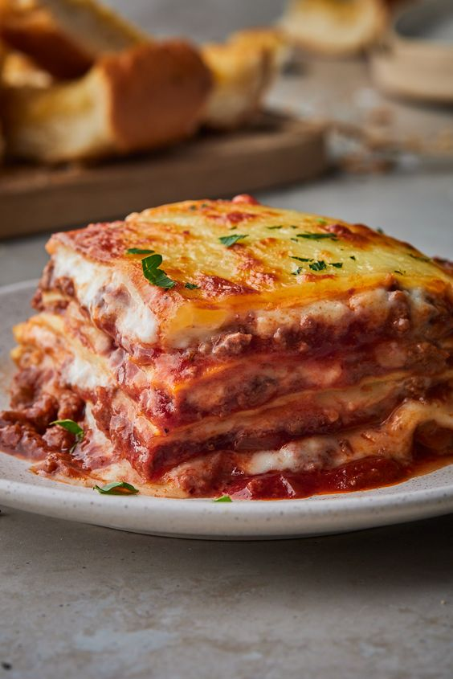

Lasagna Recipe

Description
a comforting and versatile dish, can be customized to endless preferences.
But its core lies in layering cooked pasta sheets with savory sauces and creamy cheeses.
Ingredients
- 1 lb ground beef, (15-20% fat content)
- 1 medium onion, finely diced
- 2 large garlic cloves, minced
- 1/4 cup dry red wine, or beef broth
- 1 Tbsp olive oil
- 24 oz Marinara Sauce , (3 cups)
- 1/2 tsp sea salt
- 1/4 tsp black pepper, ground
- 1/4 tsp dried thyme
- 1/2 tsp granulated sugar
- 2 Tbsp parsley, finely chopped
- 9 lasagna noodles, cooked al dente
Ingredients for Cheese Sauce:
- 16 oz low-fat cottage cheese
- 15 oz reduced fat ricotta cheese
- 1 large egg
- 2 Tbsp parsley, finely chopped, plus more to garnish
- 4 cups mozzarella cheese, shredded, divided